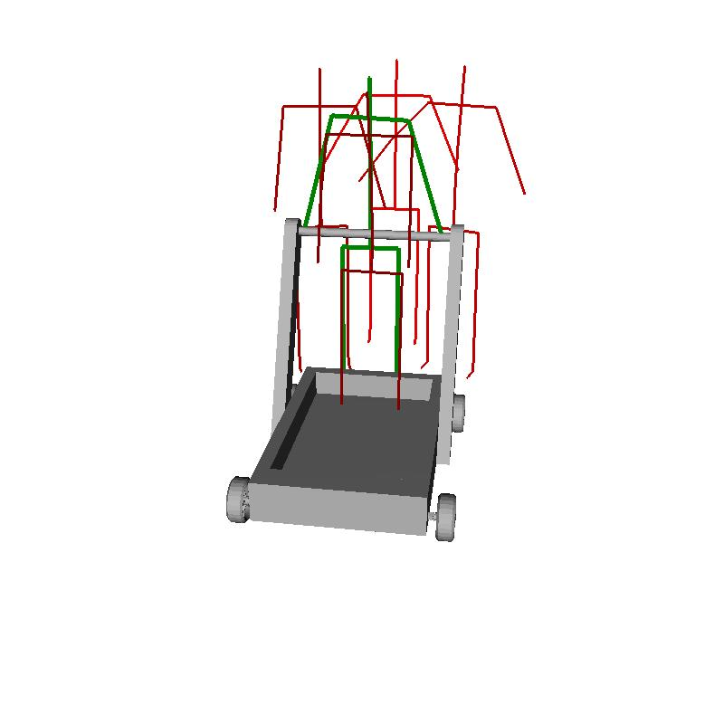

This assignment implements an algorithm for predicting the pose a human might assume when interacting with a given object. Because there's a lot more custom code than usual, here's an outline of what's attached:
data/contact: For each category (bikes, bipedals, etc.), we store a model for intersections with each joint of a pose. This is used for cost calculations.
data/pivot: For each category (bikes, bipedals, etc.), we store a model for each pivot angle (36 total). This is used for cost calculations.
scripts/: This can largely be ignored; I wrote a few scripts to automate storing property files for each file in the training list.
output/: These property files generated above can be found here. We save these and run shape2pose with these caches (input surface properties) because raytracing, which is used to compute a property, takes quite a bit of time.
src/data_trainer.cpp: This is used to read in ground truths of all training data and write models (used above) used for cost calculations.
In addition, shape2pose.cpp, render.cpp, and the Makefile were modified.
Please note that for this to run, you need to have the C++ linear algebra library, Armadillo running on your system. We use this for cost calculations. The models in our data/ directory are of type .dmm.
Computing local surface properties
We rewrote CreateMeshProperties to compute local properties for each vertex of the mesh. Specifically, we compute the following four properties, suggested by the Shape2Pose paper.
Curvature is a mesh property given and explicitly recommended. I found minimum curvature to yield the most pleasing results, although we're also given Gaussian, mean, and max curvature properties.
Minimum curvature visualization for bike.
Minimum curvature visualization for chair.
Ray length (median), or a shape diameter function.
Ray length median visualization for bike.
Ray length median visualization for chair.
Normal, or the angle between the normal vector and the up direction. This was implemented for us.
Normal visualization for bike.
Normal visualization for chair.
Height above the ground plane. This is an easy z-value lookup.
Height visualization for bike.
Height visualization for chair.
Cost calculations
We calculate three types of costs: contact distance cost, contact compatibility cost, and pivot angle cost. Contact distance is pretty straight forward (punishing joints that would contact the mesh that are far from their contact points). For contact compatibility costs and pivot angle costs, we create Gaussian mixture models trained on ground truths of training data and use them to get likeliness probabilities for new positions.
Armadillo does a lot of this learning for us; 3 Gaussians, Mahalanobis distance, and a random spread as a seed mode yielded positive results for me. More specifics of how models are created are in data_trainer.cpp.
Contact compatibility cost calculation
Each "category" (bikes, carts, etc.) has n models, one for each of the n joints of the body. If you look in data/contact/, you'll see models named "back", "head", "left_arm", etc. For each joint contact position, we store the surface properties (calculated above).
When we calculate the cost of a pose, we sum the costs of each joint of the pose. To calculate each of these individual costs, we create a surface property vector of that joint at its position and check the density of our model around this. If the likeliness value is high, the cost is low. The result compatibility cost is normalized; 0 means yes, we should definitely check out this pose! 1 is the maximum cost.
Pivot angle cost calculation
Again, we use Armadillo and Gaussian mixture models. For each pivot angle in the body (numbered 1 - 36), we create a model storing just the value of each angle at all training poses in a specified category. When we want to test an angle, we check its corresponding model.
Visualizations
Here are some visualizations of predicted property costs.
Pelvis prediction for bike.
Pelvis prediction for bipedal.
Head prediction for chair.
Hip prediction for chair.
Left foot prediction for chair.
Left shoulder prediction for chair.
Pose Selection/Refinement
To search for poses with minimal cost, we first create a desired number of poses by searching with fixed pivot angles among ground truths of training data in a similar category. We then refine these poses.
Pose selection
This satisfies the "search with fixed pivot angles" requirement. Each time we ask to create a new predicted pose, we look at ground truths of training data in a similar category and give each pose a cost based on how it corresponds to our mesh (calculated by cost calculations above). We add the next best pose to our list of poses. So, the earlier-created poses will make more sense.
3 predicted poses for bike.
4 predicted poses for bike.
5 predicted poses for bike.
3 predicted poses for bipedal.
4 predicted poses for bipedal.
5 predicted poses for bipedal.
3 predicted poses for cart.

4 predicted poses for cart.
5 predicted poses for cart.
3 predicted poses for chair.
4 predicted poses for chair.
5 predicted poses for chair.
Pose refinement
I invented a two-step, RANSAC-y way to refine a pose. The first step is in relation to root position; we perturb the root position and see if the new cost is smaller and/or the number of contacts met at that point are higher than without perturbing. If so, this is the new root position. We repeat this 100 times and choose the best result. The second step is in relation to all pivot angles. We perturb each pivot angle and modify accordingly based on improvements.
Initial three poses.
After refinement. Notice how hands move closer to handlebars and the back arches to be more along the ground truth, which we aren't using.
Another refinement. Hands move closer.
Initial three poses.
After refinement. You can see how joints are moving closer to the ground truth (and getting less cost closer to contacts).
Final refinement.
Other things
Art
Check out this person jumping onto a bike! (Testing pose refinement.)
This was by far the most time-consuming assignment, but a lot of fun.